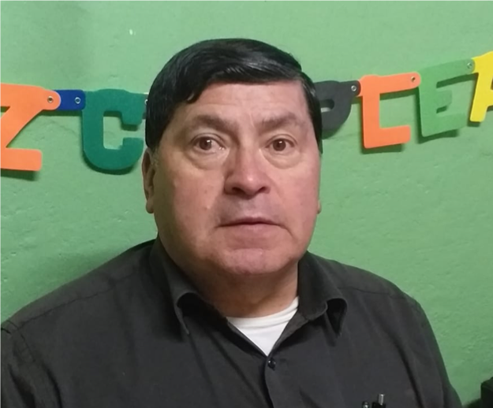
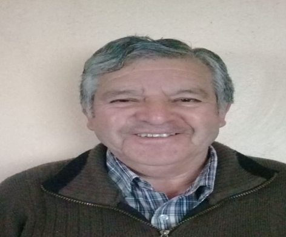

Fundación y primeros años
El 19 de junio de 1894, en la Casa de Botes de Valparaíso, se juntaron los representantes de los clubes Valparaíso Football Club, Mackay and Sutherland Football Club, Chilian Football Club, National Football Club y el Colegio San Luis, para formar el Comitee of Sports, con el objetivo de fomentar la práctica deportiva en el puerto.Al año siguiente, en el Café Pacífico de la Calle del Cabo en Valparaíso, los miembros del Comitee of Sports decidieron juntarse, el 19 de junio de 1895 a las 20:30 horas, para dar forma a la primera asociación de clubes de fútbol del país: la Football Association of Chile (FAC). En dicha reunión participaron seis clubes: Valparaíso, Mackay and Sutherland, Chilian, Victoria Rangers, National y Valparaíso Wanderers.[nota 1] Como estímulo para futuras competencias, la casa Tolson & Osborne ofreció una copa de plata. Si un club la ganaba en dos años consecutivos o en tres alternados, se la adjudicaba y pasaba a ser de su absoluta propiedad.
La primera reunión de la entidad fue dirigida por R. W. Bailey, de quien se dice que fue la primera persona en importar a Chile un balón de fútbol desde Inglaterra.[6] La primera directiva estuvo formada por: David N. Scott (presidente), Andrés Gemmell (secretario) y Robert H. Reid (tesorero), periodista del diario The Chilian Times de Valparaíso. Se acordó, además, que cada club debía pagarse una cuota anual de $5.
En sus primeros años, la Football Association of Chile sólo tenía injerencia sobre los clubes de Valparaíso y mantenía buenas relaciones con clubes y federaciones de Santiago, Concepción, Coquimbo y Antofagasta, pero su influencia no iba más allá.
Bajo su organización se disputó la Challenge Cup[7] y, con posterioridad, tres competiciones oficiales: la Copa Sporting, la Copa Mac Clelland y la League.[8] Sin embargo, hay versiones que plantean que la Copa Mac Clelland y la League constituyen el mismo torneo, documentado de maneras distintas por la prensa de la época. En estas competiciones participaban equipo tales como: Valparaíso, Santiago Wanderers, Badminton, Chilian, Mackay and Sutherland, Victoria Rangers, Gold Cross, Williamson, National, Unión Edwards, Jorge VI, Valparaíso Wanderers y La Cruz.
Liga Valparaíso
Sin embargo, pasaron varios años antes de que lograra legitimarse una asociación reconocida por todos. Como solución a la desafiliación de Chile de la FIFA en 1925, el 24 de enero de 1926, la Federación de Football de Chile se fusionó con la Asociación de Football de Chile,[10] creando así una sola entidad que pasó a controlar el destino del fútbol de Chile. Para la unificación se mantuvo el nombre de Federación de Football de Chile y la sede en Valparaíso, acción que fue reconocida en abril por la CONMEBOL y en julio, de forma provisoria, por la FIFA. Finalmente, su sede se trasladó desde Valparaíso a Santiago el 28 de abril de 1929, manteniendo su jurisdicción sobre todo el país.Por su parte, la ex-Football Association of Chile pasó a denominarse Liga Valparaíso como una entidad de carácter regional. Cabe consignar que la Football Association of Chile perdió mucha de su importancia después de la Primera Guerra Mundial, ya que gran parte de los jugadores (de origen inglés) que la conformaban partieron a dicha guerra.
Dirigentes de la Asociación 2019
Jairo NorambuenaPresidente
Wladimir RendicVicepresidente
Aldo BerettaTesorero

Manuel LópezDirector

Juan SeguraSecretario
Clubes pertenecientes a la Asociación